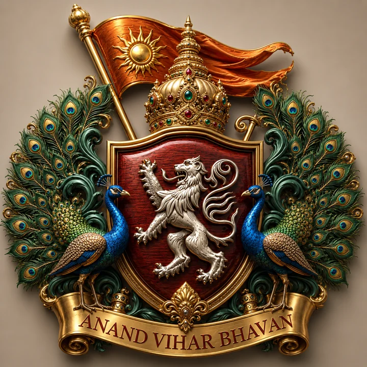

Personal Portfolio
My main website presents my work, interests, published writing and digital projects.
Digital Portfolio
Heritage in Memory. Knowledge in Creation.
Explore personal projects, Gujarati writing, Sisodiya genealogy, heritage resources, and public digital work by BHARGAVSINH SISODIYA.
01
BCA student with a strong interest in Technology, Digital Systems, Business Management, Law, Research, and Writing. Experienced in developing and maintaining web-based projects, digital repositories, PWAs, and structured information systems.
BCA Student | Technology Enthusiast | Writer | Aspiring Technology & Management Professional
02
My main website presents my work, interests, published writing and digital projects.
A Seva-planning project concept focused on organization, personal records and privacy-aware devotional planning.
A personal game-development experiment that forms part of my interest in interactive digital projects and learning through implementation.
Project descriptions include ongoing interests and development concepts. Their implementation status may change, and a project idea should not automatically be understood as a released product.
03

न्यायमूलं धर्मः धर्ममूलं राष्ट्रम्। भारतीय राजधर्म और आधुनिक लोकतंत्र का तुलनात्मक अध्ययन

વિવેક, ધૈર્ય અને આશ્રયથી આલોકિત ભક્તિ

Fiction Legal Courtroom Drama
04
Heritage
Digital archive of the Sisodiya lineage — genealogy of the Suryavanshi Mewar tradition.
History
A historical reflection on the unbroken stream of Mewad history and Sisodiya legacy.
Resources
Literature and resources related to Pushtimarg and Shuddhadvaita Vedanta.
Article
On the principle of household seva in Pushtimarg.
05

Official Residence & Heritage Sanctuary rooted in Sisodiya tradition and Pushtimargiya devotion.
Anand Vihar Bhavan is associated with my personal, devotional and creative world. It is also the publisher name I use for my publishing-related work.
06
07
For professional enquiries, collaboration, writing projects or discussions related to my published work, please use the contact options published on my official website, where available.